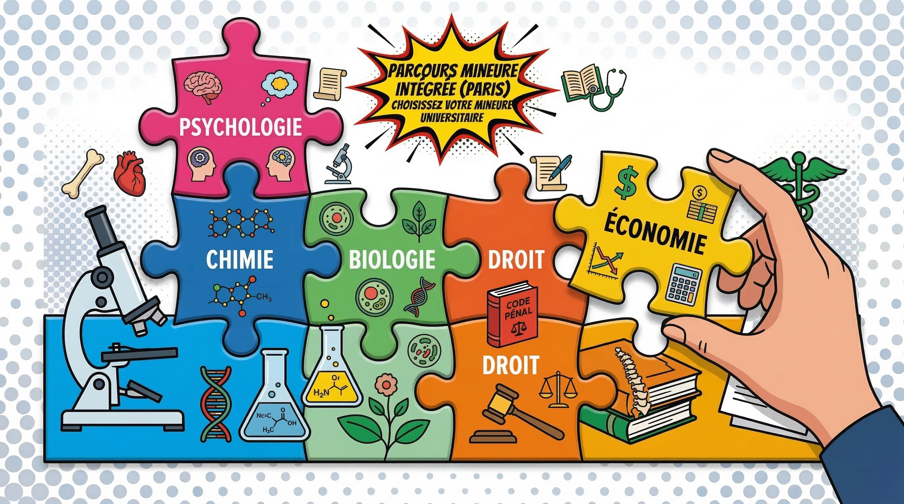

Comment bien choisir sa mineure en PASS ?

En PASS, tu vas passer la majorité de ton temps sur les matières de santé : anatomie, biochimie, physiologie, biostatistiques... Mais il y a un élément que beaucoup d'étudiants sous-estiment au moment de formuler leurs voeux Parcoursup : le choix de la mineure. Ce choix peut sembler secondaire face à l'ampleur du programme santé, et pourtant, il peut influencer ta réussite, ta motivation et surtout ton avenir en cas de réorientation.
C'est quoi la mineure en PASS ?
Depuis la réforme de 2020, le PASS (Parcours d'Accès Spécifique Santé) impose à chaque étudiant de suivre une mineure disciplinaire en parallèle du tronc commun santé. Concrètement, cela signifie que tu suis environ 80% de cours de santé et 20% de cours dans une discipline universitaire classique : biologie, chimie, droit, psychologie, etc.
Cette mineure est obligatoire. Tu ne peux pas t'inscrire en PASS sans en choisir une. Elle fait partie intégrante de ta formation et de ton évaluation : tes notes de mineure comptent dans ta moyenne générale et peuvent donc impacter ton classement final.
La mineure n'est pas une option secondaire : c'est une composante à part entière de ton année de PASS qui pèse dans ta moyenne et qui détermine ta filière de réorientation.
Pourquoi le choix de la mineure est stratégique
Beaucoup de lycéens choisissent leur mineure un peu au hasard, en se disant que seul le programme santé compte. C'est une erreur. Voici pourquoi ce choix est plus important qu'il n'y paraît :
- Tes notes de mineure comptent dans ta moyenne PASS. Une mineure dans laquelle tu es à l'aise peut te faire gagner des places précieuses au classement. À l'inverse, une mineure mal choisie peut te coûter cher.
- La mineure détermine ta filière de réorientation. Si tu ne passes pas en deuxième année de médecine, tu seras réorienté en L2 de la licence correspondant à ta mineure. Si tu as choisi Droit, tu iras en L2 Droit. Si tu as choisi Psycho, tu iras en L2 Psychologie.
- Elle ouvre la porte du LAS en L2. Une fois en L2 de ta licence de réorientation, tu pourras retenter ta chance via le parcours LAS pour accéder aux études de santé. Ta mineure influence donc directement ta seconde chance.
- C'est un signal sur Parcoursup. Les universités regardent la cohérence entre ton profil lycéen et la mineure choisie. Un bon dossier avec une mineure cohérente, c'est rassurant pour les jurys.
Les mineures les plus populaires
L'offre de mineures varie d'une université à l'autre, mais on retrouve généralement les mêmes grandes familles. Voici les plus courantes et leurs caractéristiques :
Sciences de la Vie (SVT / Biologie)
C'est la mineure la plus choisie par les étudiants en PASS, et pour cause : le programme est très proche des matières de santé. Tu retrouveras de la biologie cellulaire, de la génétique, de l'écologie... Les étudiants qui viennent de Terminale avec la spécialité SVT s'y retrouvent facilement. En cas de réorientation, la L2 Biologie offre de nombreux débouchés dans les sciences du vivant.
Chimie
Autre choix scientifique très populaire. La chimie en mineure complète bien les cours de biochimie du PASS. Si tu avais la spécialité Physique-Chimie au lycée et que tu aimais la chimie organique, c'est une option solide. La réorientation en L2 Chimie peut mener à des carrières en recherche, pharmacie industrielle ou ingénierie.
Psychologie
Souvent perçue comme une mineure "facile", la psychologie attire beaucoup d'étudiants. Attention cependant : le volume de cours à apprendre par coeur est important, et les attendus sont différents des matières scientifiques. C'est un bon choix si tu t'intéresses au fonctionnement humain et que tu envisages la psychiatrie ou la psychologie comme plan B.
Droit
Un choix original mais pertinent pour ceux qui s'intéressent au droit de la santé, à l'éthique médicale ou qui veulent un plan B radicalement différent. Le droit demande de la rigueur et de bonnes capacités de rédaction. La réorientation en L2 Droit ouvre des perspectives très variées.
STAPS (Sciences et Techniques des Activités Physiques et Sportives)
Disponible dans certaines universités, la mineure STAPS intéresse les étudiants sportifs qui envisagent la médecine du sport ou la kinésithérapie. C'est une mineure qui peut être motivante au quotidien, mais qui demande parfois une implication pratique en plus du travail théorique.
Comment choisir selon ton profil
Il n'existe pas de mineure universellement meilleure que les autres. Le bon choix dépend de ton profil personnel. Voici les questions à te poser :
Évalue tes forces académiques
- Tu excellais en SVT au lycée ? La mineure Sciences de la Vie sera probablement naturelle pour toi.
- Tu avais de très bonnes notes en Physique-Chimie ? La mineure Chimie pourrait te permettre de scorer facilement.
- Tu es à l'aise avec la dissertation et l'argumentation ? Droit ou Psychologie peuvent être de bons choix.
Réfléchis à tes intérêts
La mineure représente environ 20% de ton emploi du temps. Si tu choisis une matière qui te passionne, ces heures seront des moments de respiration dans une année intense. À l'inverse, une matière qui t'ennuie peut devenir un poids supplémentaire.
Pense à ta stratégie de réorientation
C'est peut-être le critère le plus important. Demande-toi : si je ne réussis pas le PASS, dans quelle filière est-ce que je me verrais continuer mes études ? Cette licence de réorientation n'est pas une punition, c'est une deuxième opportunité. Choisis-la en conséquence.
Pour t'aider à y voir plus clair, tu peux utiliser notre Quizz x Fac qui analyse ton profil et te recommande les parcours les plus adaptés.
Mineure et réorientation : le plan B intégré
L'un des grands changements de la réforme de 2020, c'est que le redoublement n'existe plus en PASS. Si tu ne valides pas ton passage en deuxième année de santé, tu es automatiquement réorienté en L2 de la licence correspondant à ta mineure.
C'est un mécanisme pensé pour éviter les années blanches de l'ancien système PACES. Mais cela signifie aussi que ta mineure n'est pas qu'un choix académique : c'est un véritable plan B intégré.
- Si ta mineure est Sciences de la Vie, tu iras en L2 Biologie et pourras retenter via un LAS Biologie.
- Si ta mineure est Droit, tu iras en L2 Droit avec la possibilité de candidater en LAS Droit.
- Si ta mineure est Psychologie, tu poursuivras en L2 Psycho tout en gardant l'option santé via le LAS.
Statistiquement, environ 60 à 70% des étudiants en PASS ne passent pas en deuxième année de santé du premier coup. Choisir sa mineure, c'est aussi préparer intelligemment cette éventualité.
Ce n'est pas un aveu de défaite que de penser à la réorientation dès le départ. Au contraire, c'est une démarche mature et stratégique. Les étudiants qui réussissent le mieux sont souvent ceux qui ont un plan clair, quelle que soit l'issue de l'année.
Mineure facile vs mineure utile : le vrai débat
Tu entendras forcément des avis contradictoires : certains te diront de prendre la mineure la plus facile pour maximiser ta moyenne, d'autres te conseilleront de choisir la plus utile pour ton avenir. Alors, qui a raison ?
La vérité, c'est que les deux approches ont du sens, et le bon choix dépend de ta situation :
- L'argument "mineure facile" : si tu es dans une fac très compétitive et que chaque dixième de point compte, choisir une mineure où tu peux obtenir de bonnes notes sans trop d'effort supplémentaire est rationnel. Cela te libère du temps pour le programme santé.
- L'argument "mineure utile" : si tu veux un filet de sécurité solide en cas de réorientation, il vaut mieux choisir une mineure qui t'ouvre des portes vers une filière qui te plaît vraiment. Une bonne note dans une mineure qui ne te correspond pas ne te servira à rien en L2.
Notre conseil ? Essaie de trouver le juste milieu : une mineure dans laquelle tu peux bien performer ET qui correspond à un plan de réorientation qui te convient. Souvent, la mineure dans laquelle tu réussiras le mieux est celle qui te motive le plus.
Les erreurs à éviter
Au fil des années, on a vu des étudiants regretter leur choix de mineure. Voici les erreurs les plus courantes :
- Choisir au hasard ou à la dernière minute. La mineure n'est pas un détail. Prends le temps de te renseigner sur les programmes, les coefficients et les modalités d'examen de chaque option.
- Suivre le choix de ses amis. Ce n'est pas parce que ton meilleur ami prend Chimie que c'est le bon choix pour toi. Chacun a un profil différent.
- Négliger la mineure pendant l'année. Certains étudiants font l'impasse sur les cours de mineure pour se concentrer uniquement sur le programme santé. Résultat : ils perdent des points précieux qui auraient pu faire la différence au classement.
- Ignorer le plan B. Refuser de penser à la réorientation n'est pas de l'optimisme, c'est de l'imprudence. Choisis une mineure qui a du sens même si tu ne passes pas.
- Confondre "facile" et "peu de travail". Une mineure peut sembler facile sur le papier mais demander un type de travail très différent de ce que tu fais en santé (dissertations, travaux pratiques, projets...).
Conseils pratiques de l'AFEM
Pour faire le meilleur choix possible, voici nos recommandations concrètes :
- Renseigne-toi en amont. Consulte les maquettes pédagogiques des mineures proposées par les facs qui t'intéressent. Chaque université a ses propres programmes et ses propres coefficients.
- Parle à des étudiants qui sont passés par là. Rien ne vaut le retour d'expérience de quelqu'un qui a vécu l'année de PASS dans la même fac avec la même mineure. L'AFEM peut te mettre en relation avec des étudiants bénévoles.
- Utilise nos outils. Notre Simulateur Parcoursup te permet d'estimer tes chances d'admission, et le Quizz x Fac t'aide à identifier les parcours les plus adaptés à ton profil.
- Ne néglige pas les journées portes ouvertes. C'est l'occasion de poser des questions directement aux responsables pédagogiques et de sentir l'ambiance de chaque filière.
- Fais un choix personnel. C'est toi qui vas vivre cette année. Écoute les conseils, mais la décision finale doit te ressembler.
Le choix de la mineure est l'un des rares leviers que tu contrôles avant même de commencer le PASS. Utilise-le à bon escient.
En résumé, le choix de ta mineure en PASS mérite autant d'attention que le choix de ta fac. C'est un levier de réussite, un filet de sécurité et un marqueur de cohérence dans ton dossier. Prends le temps de bien réfléchir, informe-toi, et fais un choix qui te correspond vraiment.